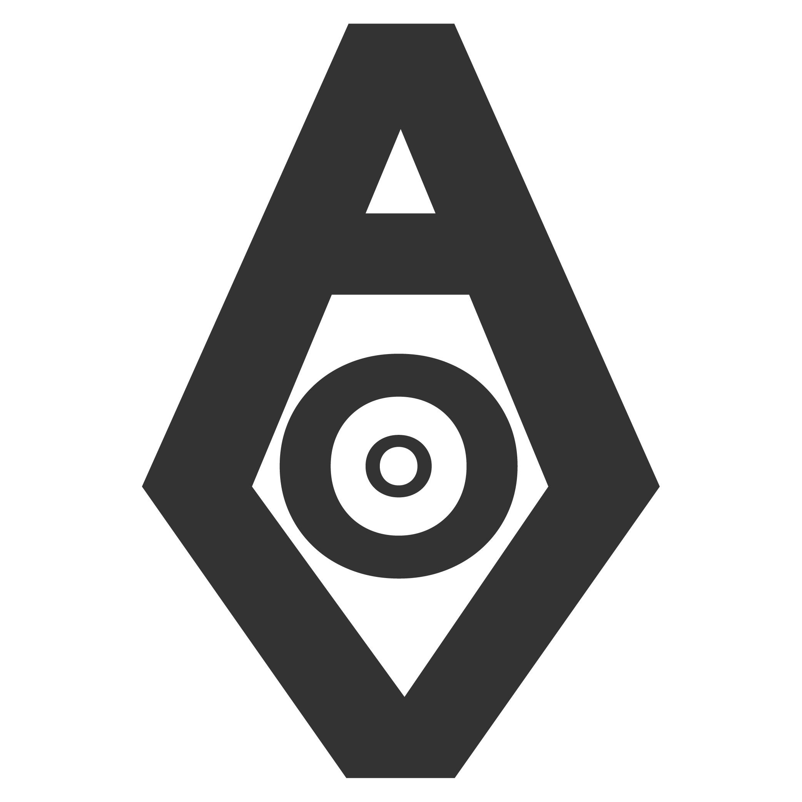

0 objetos
V.A.O.: Soy V.A.O., vigilancia administrativa orgánica. Tus requerimientos fueron procesados.

DEPARTAMENTO DE GESTIÓN
SUB-UNIDAD DE RECURSOS ORGÁNICOS
 DOOM.EXE
DOOM.EXE010
🙂
000
VAO OS
 Juegos
Juegos Proyectos
Proyectos12:00